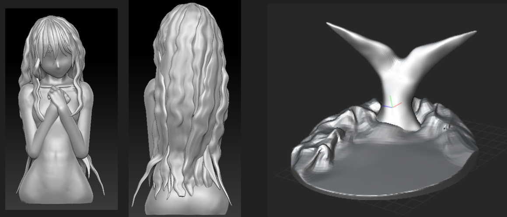
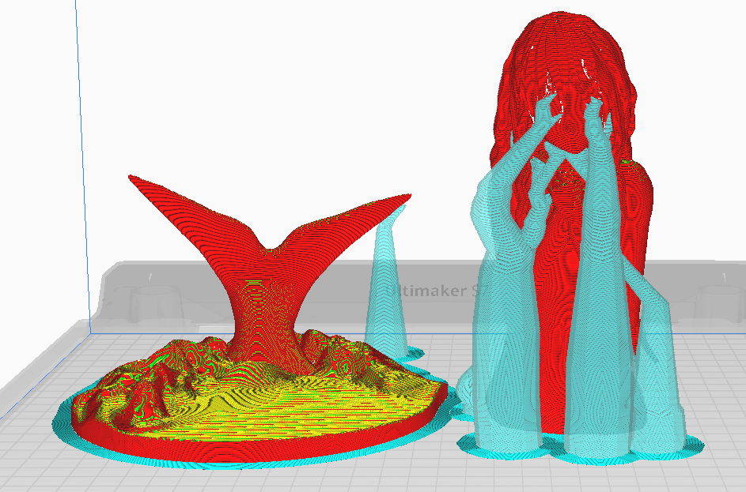

人魚救済計画
——Mermaid Salvation Plan——
当企画は、人魚の形をしたキャンドルを制作し、美と死亡というテーマをとおして、生命の尊さを表現することを目的としています。これらのキャンドルは、自然環境と生態系を保護するために私たちが持つべき生命の尊重の象徴であり、革新的なアート体験だけでなく、人類の価値観や精神面についての探究でもあります。この企画を通じて、人々の敬虔な生命観と感謝の心を刺激し、美しい未来への期待を伝えたいと考えています。
1.構想
アイデア(2023.4.6)
1.
私は時間の流れを具体化するものを作り出したいです。
砂時計のように、静かに消えゆく美しさを表現し、同時に時間を大切にすべきだという理念も伝えたいと思います。
現在私が考えているのは、時間が設定でき、時間とともに暗くなるナイトライトを作ることです。
キャンドルのように、時間の流れとともにライトの表面には異なる美しい変化が現れます。
2.
同じように、ナイトライトを作りたいですが、今度は「一緒に過ごす」というテーマを使いたいと思います。
一人暮らしをしていると、孤独を感じることがあります。何か動物や植物に付き添ってもらえたら良いなと思うこともあります。
デザイン感のある豆苗の育成装置は、この問題を解決するかもしれません。
私は以前に豆苗を育てたことがありますが、豆苗は非常に速く成長し、夜には数センチ成長していることもあります。
毎朝、また長くなった豆苗を見ると、活力に満ちた喜びを感じます。そして、豆苗の育成は非常に簡単で、すぐに成果を見ることができます。
容器があれば、花や草を育てることもできると思います。
キャンドル(2023.4.18)
最近私は適切なモデルを考え続けており、アイデアができたらFusion360またはBlenderを使ってモデルを作成しようと考えています。
しかし、私はさっき突然、「消えていく美しさ」を表現したいのであれば、作品が循環利用されるようなナイトライトのようなものを作るべきではないと思いました。
むしろ、キャンドルなどの使い捨ての製品にすべきです。私にとって、キャンドルは人生と同じように、燃え尽きたら存在しなくなるため、美しさを表現するのに適していると考えています。
したがって、私の制作プロセスには：①モデルのアイデアを考える、②モデルの制作、③3Dプリント、④シリコーンを流し込んでキャンドルを作ることとなります。
同時に、人生が終わった後にも残るように、キャンドルの内部に紙（火に燃えない材料と考えていますが、金属か？）を入れ（おみくじクッキーみたい）、その上に何か書くことができます。
励ましの言葉？美しい詩？具体的な内容はまだ考え中です。
関連する問題：
1.キャンドルの燃焼速度はどのようにコントロールできる？
2.キャンドルの色合いはどのように調整する？
3.キャンドルが溶けたロウを受けるために何を使用する？
4.レーザー加工機で金属を加工すること？（コスト？）金属以外は何が材料がある？
マーメイド(2023.4.22)
今日、私はホームページのテーマを「人魚」に決めました。
童話に登場する人魚は、脆弱で美しい存在です。私はこの幻想的な美しさに惹かれたため、このテーマをインスピレーションにしてモデルを作成することにしました。
この企画はキャンドル企画ですので、人魚の形をしたキャンドルを制作する予定です。
そして、私は脳内の人魚キャンドルの形を簡単にスケッチし、AIの描画ツールを使って詳しく描きました。
また、私はAIを使ってホームページの背景を描き、企画に関する説明を追加し、「人魚救済計画」と名付けました。
次に、企画の第二部分に進み、Blenderソフトウェアの学習に取り組み、脳内のイメージを具体的な3Dモデルに変換することを目指します。
2.モデル制作
zbrush(2023.5.12)
楽しいゴールデンウィークを過ごしました！
ゴールデンウィークだったので企画は進展しませんでした。
調べた結果、モデル制作に適したソフトウェアはZBrushだとわかりました。だから、5月8日から4限後に学校に残ってZBrushの勉強をしています。
現在はZBrushの基本操作を学んでいます。
同時に、Design Dollという補助モデリングソフトウェアを使えば、直接人体を作成できます。私はそれを使って人魚の体の部分を初めて完成させました。
次はZBrushで顔や髪の彫刻の部分です。
がんばります^^
zbrush(2023.7.24)
お待たせいたしました～
髪の毛は難しかったです…時間かかりました。
これより、モデルの部分は大体完成しました。
次は：３Ｄプリント→キャンドル制作
です！
乞うご期待～
モデル更新(2023.9.17)
夏休みの後、私は再モデリングを行い、多くの部分を追加しました。
今回のモデリング中に、制作過程の動画も記録しました。
このモデリングはキャンドルを作るのが主な目的だったので、色付けや顔の制作はしていません。
次は、3Dプリントに進みます！
動画はこちら：https://www.youtube.com/watch?v=aSix0H1AYyY
モデル修正(2023.10.11)
モデルを3Dプリントに持ち込もうとしたところ、モデリングファイルが大きすぎるという問題がありました。
エクスポートしたobjファイルは1.6 Gで、私のパソコンではこのファイルをcuraにインポートするのは難しいです。
ネットで検索したり、友人に相談したりした後、元のモデルの精度を大幅に落とし、鱗のデザインをすて、底の部分も作りました。

最後に、objファイルを6.8 Mに圧縮しました。curaのインポートとスライスにも無事成功できました。

プリントには、10時間程度かかる予定です。
モデルプリント(2023.10.28)
プリントできました！次に、第三部分、キャンドル制作に進みます。
シリコンモデルを作るための材料や、キャンドルの材料、色をつける顔料などを買う予定です。
.jpg)
モデル修正(2023.11.14)
作ったモデルのサイズを調整し、16cm→13cmに変更しました。
.jpg)
そして、シリコーンが流されない穴も修復しました。
.jpg)
.jpg)
予定を少し変更して、キャンドル制作の部分が、冬休み期間で国に帰った後にしようと考えます。
3.キャンドル制作